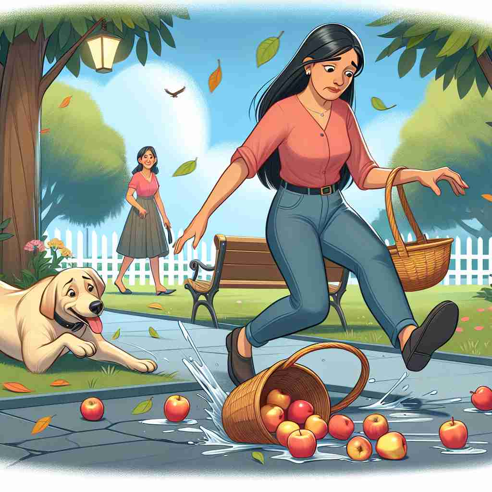

💬 People are worried about what will happen next after the accident.

💬 The celebration will happen under the rainbow after the rain.
💬 Something can happen in the street at night.

💬 The apples happen to fall by accident.
🔈 ['hæp(ə)n]
🗝️ v. to take place or occur
🖼️ 在一个热闹的派对上，人们正在尽情舞蹈。一位朋友突然宣布说：'生日蛋糕要切了！'这时，大家都停下来，围绕在桌子旁。这个切蛋糕的瞬间就是派对的高潮，展示了某件事发生或出现的含义。
🔍 想象'happen'是一个突然出现在舞台上的演员。这个核心概念——'发生'或'出现'——贯穿了所有含义。无论是偶然相遇、遭遇事件、某物存在，还是结果发生，都可以想象成这个演员在不同场景中的出场。这种联想可以帮助你更容易记住和理解'happen'的各种用法。
💬 People are worried about what will happen next after the accident.
💬 The celebration will happen under the rainbow after the rain.
💬 Something can happen in the street at night.
💬 The apples happen to fall by accident.
🌳 该词由词根 "hap"（意外，运气）加后缀 "-en" 组成，本身即为一个动词，表示事件或情况的发生。
💡 记忆 "happen" 时，可以想到 "hap"（运气）加上 "en"，表示事情的发生往往与运气有关。通过将事件的随机性和自然发生联系起来，帮助记忆。
🗝️ v. to come about by chance
🖼️ 在一个阳光明媚的公园中，一位老人正在散步。他偶然低头，看见地上有一枚幸运硬币。他笑了笑，捡起硬币，这种偶然的发现展示了事物偶然发生的含义。
💬 I happened to meet an old friend at the mall.
❓ 强调事件的偶然性
🗝️ v. to befall or occur to someone
🖼️ 在一个寂静的夜晚，一个年轻人在街上安静地走着。突然，他头顶的天空下起了雨，他加快了脚步，试图赶回家。雨水不期而至，展示了某件事突然降临在某人身上的含义。
💬 I wonder what happened to John after he left the party.
❓ 事件作用于特定对象
🗝️ v. to exist or be found
🖼️ 在一个古老的图书馆里，一名学生正在寻找一本特定的书。当他走到一个角落，意外发现所需的书赫然在目。书的存在展示了某物存在或被发现的含义。
💬 Do you happen to have a pen I could borrow?
❓ 表示某物的存在或出现
🗝️ v. to result or follow as a consequence
🖼️ 在一个学生聚会后，几个朋友仍在狂欢，最终导致一位邻居敲门投诉噪音。这时，他们意识到，继续保持安静是紧随聚会后果的一部分。这个场景展示了某事作为结果发生的含义。
💬 What will happen if I press this button?
❓ 强调事件的因果关系